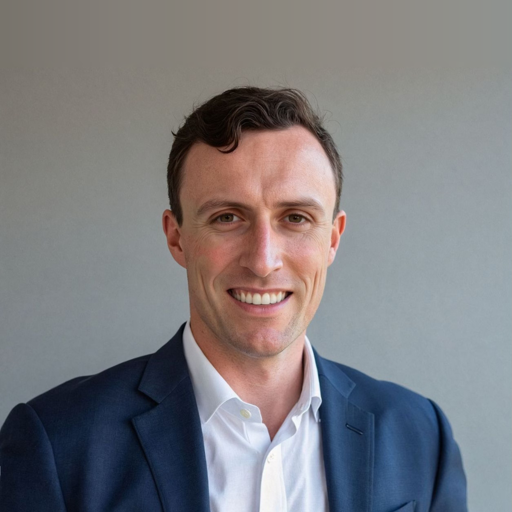

Alex Oliverpartner at a16z.
Alex spent fifteen years as an Army infantry and intelligence officer, deploying to Iraq, Afghanistan and West Africa. At the Defense Innovation Unit he ran maritime autonomy, taking autonomous systems from prototype into the Navy and Marine Corps.
Today he backs founders building in aerospace and national security, betting that the hardest defense problems of our era will be solved by startups.

WhenThursday, November 19, 6 – 8 PM
WhereRouss-Robertson Hall, Room 123
DressBusiness casual